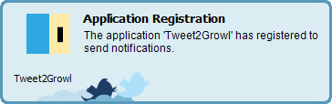

はじめに
アクセスキー設定確認で成功した後に実施してください。
起動
libsフォルダの Tweet2Growl.jar をダブルクリックして実行。
タスクトレイに左記のアイコンが表示されていれば起動に成功しています。
起動後、自動的にUserStreamの受信を開始します。
受信開始時には Streaming start. という内容の通知が表示されます。
初回起動時
初回起動時は Growl (for Windows) へのアプリケーション登録処理が行われます。
Growl for Windows の場合はThe application
'Tweet2Growl' has registered to send notification. という通知が表示されたら成功です。
アプリケーション登録時の通知画像例
Growl for Windows, Twitter Display 使用の場合 
停止
タスクトレイアイコンの右クリックメニューから終了を選択してください。